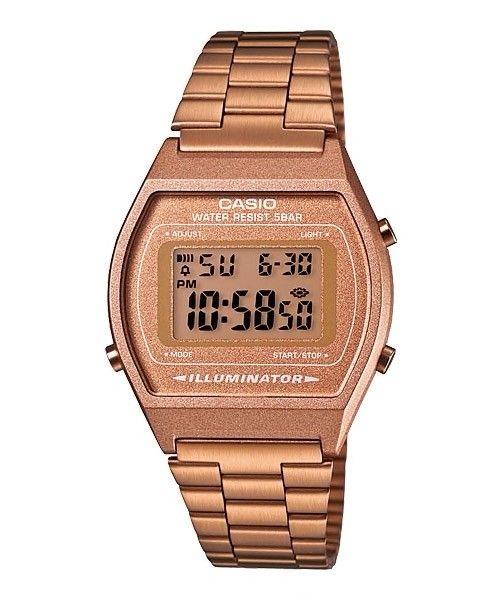
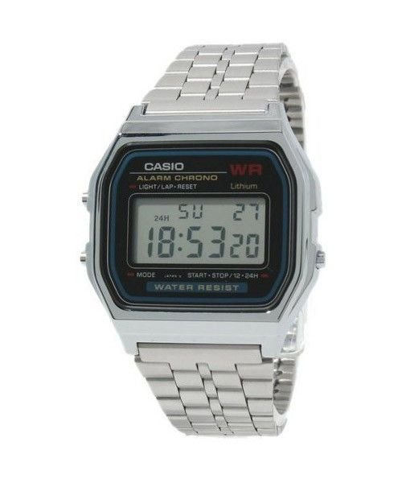

Casio retro-range watch
 BUY NOW
 BUY NOW
BUY NOW
Price: R1,444.00
 BUY NOWPrice: R746.00
BUY NOW
Price: R1,699
BUY NOWPrice: R1,274.00
Stock availability: Available in Gold, Silver,Pink,Grey & Blue & Black
Product Description
Casio's innovation and imagination has kept them going strong since 1957, with their cult timepieces at the forefront of the digital watch revolution.
Vintage aficionados go for the classic Retro watch
Casio is proud the present its outstanding collection of Casio watches which fall under the standard collection and retro range.
These models are great value for money and are made with Casio's usual outstanding quality.
Casio watches are well-known for it's Resin Glass
Water Resistance, stainless Steel Band, adjustable Buckle, micro-light, daily alarm,hourly time signal,auto-calendar and much more.